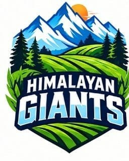

West Bengal · A new agricultural league
The field is the arena.
The farmer is the champion.
A league for 5,000 model farms across Bengal. Build with purpose, learn with your team and reconnect the world to its roots.
A joint initiative by
Two organisations. One mission for Bengal's farmers.
The global Bengali promise
Your success travelled the world. Let it return to your Bhite Mati.
The proposed model pairs a Bengali or friend of Bengal with a farm near their ancestral village. Each ₹1 lakh sponsorship is described as five ₹20,000 contributions over the year. Mentoring, daily video updates and transparent digital accounts are part of the plan.
Understand the sponsor pathwayBhite Mati, in practice
More than a contribution. A relationship.
The interview imagines a sponsor staying connected to a farm in or near their family's ancestral area. This is the proposed journey, not a live sponsorship service.
Find the connection
Match a sponsor with a selected farm in or close to their ancestral constituency or village.
Back the work
The proposed ₹1 lakh support is spread across five ₹20,000 contributions during the year.
See the progress
Daily video logs, transparent digital accounts and farm metrics are envisioned for reporting. Verification rules remain to be published.
Mentor, not just fund
Sponsors may share knowledge and help farmers use appropriate technology as the farm develops.
The model farm
Three principles. One thriving farm.
MahacharyaJi describes the farm through Sat, Mangalmay and Sundar, leading to Samriddhi. Select a principle to explore its practical meaning.
Honest food, healthy soil
The source calls for natural, chemical-free and pesticide-free cultivation. Sat means treating people and land with care.
Technology in service of nature
Smart agricultural methods, AI, automation and global practices are proposed as tools for farmers, aligned with the natural ecosystem.
A farm people want to visit
Clean, thoughtfully designed integrated farms could welcome families, schoolchildren and neighbours for learning, community gatherings and nature-based tourism.
Samriddhi সমৃদ্ধি
The aim: productive, diverse crops and lasting economic and community prosperity.
The big idea
A league built around better farms, not a stadium.
Like a sporting league, KRL brings teams, a season and recognition. But here, every participant’s farm is the playing field. The one-year journey focuses on visible farm transformation supported by modern practice, management and market connections. Official scoring criteria are still awaited.
The newer conversation calls for agriculture's 'Kapil Dev moment': a cultural shift that makes farmers visible heroes. KRL proposes learning, competition and storytelling to help create that shift.
“We are searching for the ratnas, the jewels among our farmers.”
Mahacharya Sourabh J. Sarkar, interview summary
The four pillars
Awaken. Ask. Learn. Practise.
Jagaran জাগরণ
Awaken pride in farming and the possibility of rural renewal.
Jigyasa জিজ্ঞাসা
Ask what a healthier, smarter and more beautiful farm could be.
Adhyayan অধ্যয়ন
Study modern methods and traditional knowledge, then share what works across teams.
Sadhana সাধনা
Turn learning into disciplined daily practice, through weather and operational setbacks.
Choose your place in the league
One movement. Three ways in.
Your field is the arena
Transform what you already have
Start with your own plot. Build it over one year with practical support, modern methods and a clear transformation goal.
Every score matters
Compete locally. Rise together.
Each constituency contributes participants to a zonal team. Individual farm progress builds the team's combined result.
Reconnect with bhite mati
Back a farm near your roots
The proposed sponsorship model connects Bengalis around the world with selected farmers in their ancestral areas.
Applicant pathway
Know your next move.
Applications are not open on this site yetThe official link and dates will appear here after organiser confirmation.
Bring the mindset, not a particular age
The deeper interview defines youth by initiative and willingness to build a model farm, even for people aged 50 or 80. A farm unit may be one person, spouses or siblings. Formal eligibility still needs the published rulebook.
Document where your farm is today
Prepare the location, approximate area, present crops or activities, current challenges and the change you want to achieve over one year. Official document requirements have not yet been published.
Use only the verified registration link
Registration is expected through the official organiser channel. Do not send money, documents or personal data through an unverified form or social account.
Selected farms join a zonal team
The roadmap targets 50,000 applicants and 5,000 selected farms across 15 teams. Individual farm scores out of 100 are intended to combine into a team total, so neighbours have a reason to mentor one another. Selection and scoring details still need official rules.
The league line-up
Fifteen teams. Fifteen identities.
Select a badge to meet each regional team and hear the Bengali chant that carries its character into the league.

01 / 15
Regional team
Himalayan Giants
“পাহাড় ভালোবাসি, ফসল ফলাবো রাশি রাশি”
League anthem
শিকড় থেকে সম্ভাবনা
From roots to possibility · 3:16
0:00 / 3:16
A league with a public
A farm is the player. A region is the team. Everyone can cheer.
The plan groups Bengal's 294 constituencies into 15 zonal teams. Each could include roughly 300 to 400 competing farms, alongside neighbours and supporters who follow their progress. The goal is cooperation within teams and a wider public culture around farming.
50,000applicant target
5,000selected farm target
50 lakhpublic interactions target
These are campaign goals from the supplied blueprint, not current counts.
The journey
From one plot to a state-wide movement
The interview describes a simple path: express interest, earn selection, transform a farm and contribute to a team’s shared score.
- 01
Register interest
Farmers and farming enthusiasts apply through the organisers' official channel when registration opens.
- 02
Selection
The statewide target is 5,000 selected farm units across Bengal's constituencies. The exact distribution and selection criteria still need official rules.
- 03
Build the farm
Participants spend one year improving their own land with training, technology and management support.
- 04
Compete together
Individual progress and the combined performance of each zonal team lead to recognition and prizes.
What participants gain
Support for the whole farming journey
The initiative is designed to pair individual responsibility with practical support, from field decisions to selling beyond the local market.
Modern farm training
Guidance for smart, integrated and technology-enabled agriculture.
Management support
Help to plan, operate and steadily improve a farm over the league year.
Market connections
Facilitation for sales, export readiness and connections beyond Bengal.
Compete together
Your farm lifts the whole team.
In the detailed interview, every model farm is described as receiving a score out of 100. The individual scores combine into a zonal team total. A teammate who helps a neighbouring farm improve also strengthens the team's chance of winning. The precise scoring rubric and judging process have not yet been published.
Farm 0160 / 100
Farm 0275 / 100
Farm 0385 / 100
Illustrative team subtotal220 / 300
Example only. This is not a published scoring table.The proposed timeline
Three Puja milestones. One Bengal model.
Launch and prototype
The plan calls for a statewide KRL launch, a 50,000-applicant drive and the unveiling of a model farm at Munsibheri built from a former dumpyard.
Season one finale
The target is 5,000 active model farms across Bengal and a Durga Puja awards ceremony for the announced ₹3 crore season-one prize pool.
Pratyabartan
The long-term vision is a Bengal model of nature-aligned farming, rural enterprise and a living link between the diaspora and ancestral villages.
Beyond the harvest
A model farm can serve an entire community.
The blueprint proposes three ways a beautiful, working farm could create value beyond crop sales. These are ambitions, not services currently promised at every farm.
Nature-based visits
Families could spend time at well-kept local farms, creating a path for agro-tourism and supplementary income.
Open-air learning
Children could explore biology, ecology, mathematics and nutrition through hands-on experiences on a working farm.
Stories worth sharing
Farm progress, team rivalries and local successes could become digital and broadcast stories that bring farmers into public view.
The announced financial model
Capital for farms. Recognition for teams.
The newer interview separates the ₹50 crore sponsorship target from a ₹3 crore season-one prize pool. These are announced targets, not a live payment or prize claim. Final terms require an official rulebook.
Proposed sponsorship across five ₹20,000 contributions over the year.
5,000 sponsors paired with 5,000 model farms.
Announced for team, individual and other awards. Exact distribution awaits rules.
A proposed selection pool for 5,000 participating farms.
60days
The Munsibheri prototype
Can a neglected site become a model smart farm?
The source describes a 60-day plan to turn a former dumpyard at Munsibheri into an integrated model farm for the Durga Puja 2026 launch. The site should be treated as a proposed demonstration until dates, methods and measured results are published.
Questions, answered
What you need to know now.
These answers separate the announced KRL model from details that still require official confirmation.
What is Krishi Ratna League?
KRL is a proposed year-long agricultural league in which each participant's farm becomes the playing field. Farmers improve their farms, contribute to zonal team performance and compete for recognition and announced prizes.
Who can apply? Is there an age limit?
MahacharyaJi defines 'youth' by energy and commitment, not a fixed age: an applicant could be 50 or 80. Individual farmers, spouses or siblings may form a participating unit. Formal age, residency, land and document rules still need official publication.
Is a large farm required?
No minimum area is stated in the source interview. It explicitly describes starting with the land a participant already has, whether one, two or ten bighas. Official eligibility may still add conditions.
How will the teams work?
The proposed structure groups 294 constituencies into 15 zonal teams, each with roughly 300 to 400 farms. Individual farm scores are planned to add up to a team score, encouraging neighbours to mentor one another. Final boundaries and numbers await official rules.
What financial support has been announced?
The proposed model pairs 5,000 sponsors with 5,000 selected farms. Each sponsor would contribute ₹1 lakh in five ₹20,000 instalments across the year, making a ₹50 crore crowdfunding target. This is a plan, not an active payment facility; final terms await official rules.
What prizes have been announced?
The newer interview describes a ₹3 crore Season 1 prize pool, with more than ₹1 crore directed to winning team and individual performance awards. An earlier conversation suggested a more specific split, but final categories, amounts and judging rules need an official rulebook.
What support will selected farmers receive?
The announced support includes modern technology, smart and integrated farming, farm management, sales, export readiness and global market connections.
How are farms scored?
The detailed interview describes a score out of 100 for each farm, with farm scores combined for the zonal team. The specific criteria, judging methods, inspections and tie-breaking rules have not been published. The score illustration above is an example, not an official rubric.
How does Bhite Mati sponsorship work?
The proposed model connects a prosperous Bengali living elsewhere with a selected agricultural youth in the sponsor's ancestral constituency. The interview presents a ₹1 lakh contribution as a direct bridge back to ancestral soil, not simply as charity.
Can I sponsor someone now?
Not through this website yet. Wait for the organisers to publish a verified sponsorship process, financial terms and accountability mechanism. Do not transfer funds through an unverified request.
How would a sponsor follow a farm's progress?
The proposed system includes daily farm video logs, digital accounts and AI-assisted tracking and mentoring. These are planned features, not services already available on this website. The organisers need to publish the reporting and verification process.
When will applications open?
No confirmed opening date, closing date or live registration URL appears in the supplied source material. This site will display them once formally confirmed.
What is the proposed timeline?
The blueprint targets a Durga Puja 2026 launch and Munsibheri prototype, 5,000 model farms and season-one awards in 2027, and a wider Bengal model in 2028. These are targets, not confirmed event dates.
Who organises KRL Bengal?
The initiative is presented as a joint effort of Karmyog for the 21st Century and Bharatiya Krishak Samaj. Final programme rules and official application links should come from verified organiser channels.
No matching questions found.